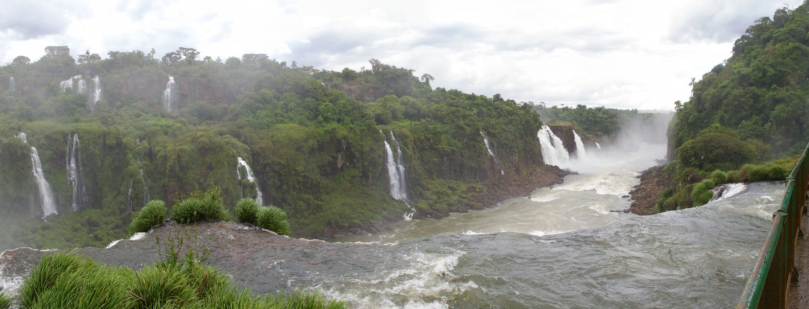
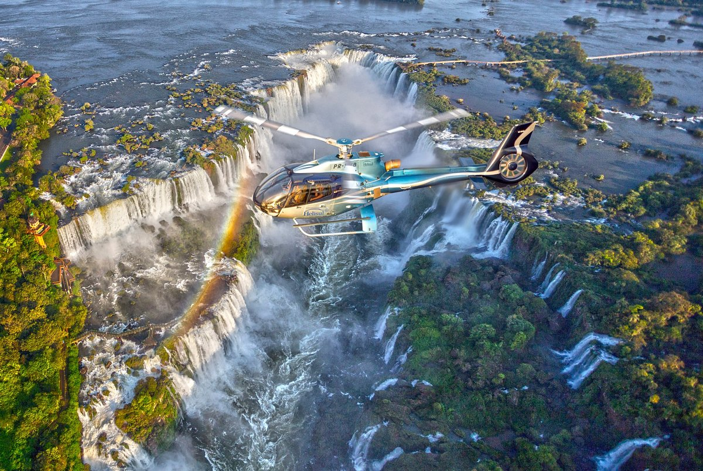
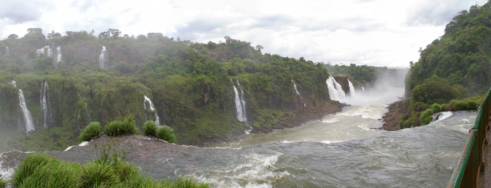
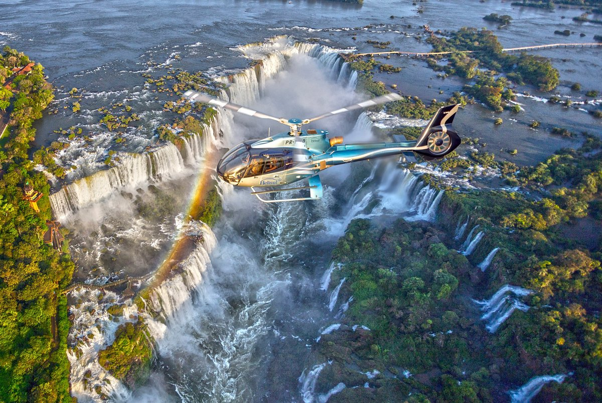

Welcome to the Edge of Thunder
Located on the border between Brazil and Argentina, Iguaçu Falls (Cataratas do Iguaçu) is a jaw-dropping collection of over 270 waterfalls stretching across 2.7 kilometers. Taller and wider than Niagara Falls, the roaring cascades offer one of the most powerful and unforgettable natural sights on Earth.
The surrounding national park is a lush subtropical rainforest full of exotic animals, colorful butterflies, and miles of scenic trails. A must-see for adventurers, nature lovers, and photographers alike.
Unmissable Highlights
- Devil’s Throat (Garganta do Diabo): The most dramatic part of the falls with towering water and endless mist. Explore more
- Panoramic Walkways: Enjoy a wide-angle view of the falls from the Brazilian side and get soaked in the spray.
- Helicopter Tours: Get a bird’s-eye view of this UNESCO World Heritage Site.
- Iguaçu National Park: A beautiful park with wildlife, flora, and educational centers. Official site
 




Photos from unkown and away, flickr, tripadvisor, travel agent central.
Main Falls |
Devil’s Throat |
Park Trail